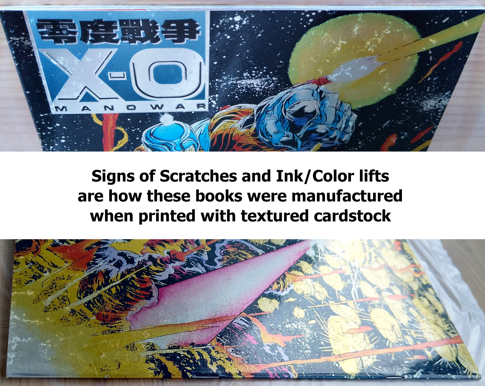
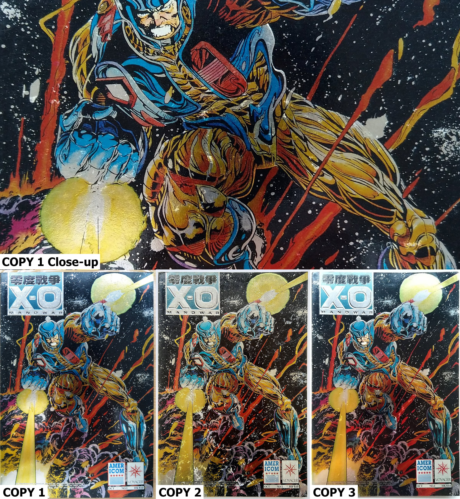
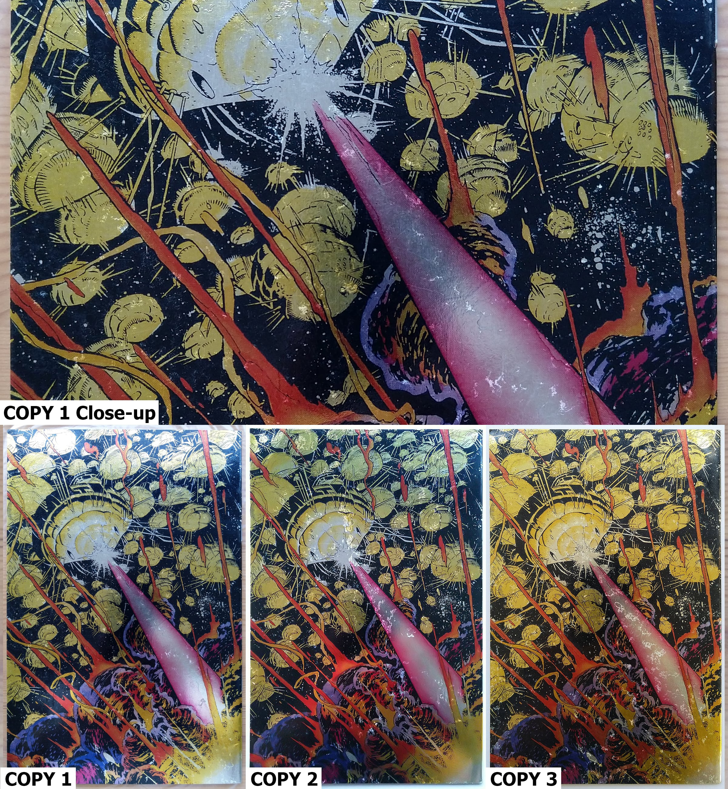
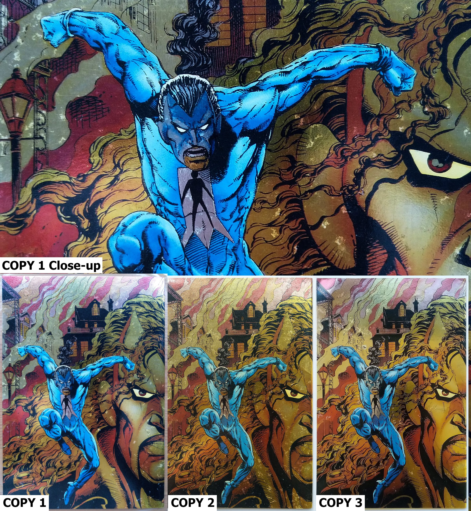
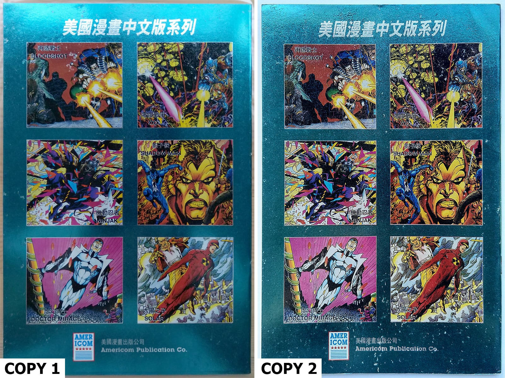

Below are some images taken from multiple copies of the same book where you can see similar signs to 'Ink/Color lift' on their foil covers in different patterns and scales due to being printed on bump textured cardstocks.
(Click on images to view in full resolution)




These issues on the foil cover can be identified on all copies that were printed on bumpy textured cardstocks and are of manufacture/printing ïssues. Therefore, I don't think they should be counted against their grades.
(Above images are from a couple of books only. All six books from this foreign collector's set were manufactured and printed in the same fashion.)